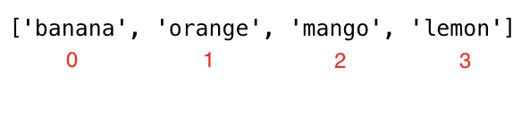
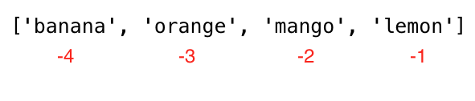

05 列表⚓︎
列表⚓︎
Python 中有四种集合数据类型：
- 列表（List）：是一种有序且可更改的集合。允许重复成员。
- 元组（Tuple）：是一种有序且不可更改的集合。允许重复成员。
- 集合（Set）：是一种无序、无索引且不可更改的集合，但我们可以向集合添加新项目。不允许重复成员。
- 字典（Dictionary）：是一种无序、可更改的集合，并具有索引。不允许重复成员。
列表是一种包含不同数据类型的集合，它是有序且可修改（可变）的。列表可以为空，也可以包含不同数据类型的项。
如何创建列表⚓︎
在 Python 中，我们可以以两种方式创建列表：
- 使用列表内置函数
# 语法
lst = list()
empty_list = list() # 这是一个空列表，列表中没有任何项目
print(len(empty_list)) # 0
- 使用方括号
[]
# 语法
lst = []
empty_list = [] # 这是一个空列表，列表中没有任何项目
print(len(empty_list)) # 0
具有初始值的列表。我们使用 len() 来查找列表的长度。
fruits = ['banana', 'orange', 'mango', 'lemon'] # 水果列表
vegetables = ['Tomato', 'Potato', 'Cabbage', 'Onion', 'Carrot'] # 蔬菜列表
animal_products = ['milk', 'meat', 'butter', 'yoghurt'] # 动物产品列表
web_techs = ['HTML', 'CSS', 'JS', 'React', 'Redux', 'Node', 'MongDB'] # Web 技术列表
countries = ['Finland', 'Estonia', 'Denmark', 'Sweden', 'Norway']
# 打印列表及其长度
print('水果:', fruits)
print('水果数量:', len(fruits))
print('蔬菜:', vegetables)
print('蔬菜数量:', len(vegetables))
print('动物产品:', animal_products)
print('动物产品数量:', len(animal_products))
print('Web 技术:', web_techs)
print('Web 技术数量:', len(web_techs))
print('国家:', countries)
print('国家数量:', len(countries))
输出结果
水果: ['banana', 'orange', 'mango', 'lemon']
水果数量: 4
蔬菜: ['Tomato', 'Potato', 'Cabbage', 'Onion', 'Carrot']
蔬菜数量: 5
动物产品: ['milk', 'meat', 'butter', 'yoghurt']
动物产品数量: 4
Web 技术: ['HTML', 'CSS', 'JS', 'React', 'Redux', 'Node', 'MongDB']
Web 技术数量: 7
国家: ['Finland', 'Estonia', 'Denmark', 'Sweden', 'Norway']
国家数量: 5
- 列表可以包含不同数据类型的项
lst = ['Asabeneh', 250, True, {'country': 'Finland', 'city': 'Helsinki'}] # 包含不同数据类型的列表
使用正向索引访问列表项⚓︎
我们使用它们的索引访问列表中的每个项目。列表索引从 0 开始。下面的图片清楚地显示了索引从哪里开始。

fruits = ['banana', 'orange', 'mango', 'lemon']
first_fruit = fruits[0] # 我们使用索引访问第一个项目
print(first_fruit) # banana
second_fruit = fruits[1]
print(second_fruit) # orange
last_fruit = fruits[3]
print(last_fruit) # lemon
# 最后一个索引
last_index = len(fruits) - 1
last_fruit = fruits[last_index]
使用负向索引访问列表项⚓︎
负索引意味着从末尾开始，-1 表示最后一个项目，-2 表示倒数第二个项目。

fruits = ['banana', 'orange', 'mango', 'lemon']
first_fruit = fruits[-4]
last_fruit = fruits[-1]
second_last = fruits[-2]
print(first_fruit) # banana
print(last_fruit) # lemon
print(second_last) # mango
解包⚓︎
lst = ['item1', 'item2', 'item3', 'item4', 'item5']
first_item, second_item, third_item, *rest = lst
print(first_item) # item1
print(second_item) # item2
print(third_item) # item3
print(rest) # ['item4', 'item5']
# 第一个示例
fruits = ['banana', 'orange', 'mango', 'lemon', 'lime', 'apple']
first_fruit, second_fruit, third_fruit, *rest = fruits
print(first_fruit) # banana
print(second_fruit) # orange
print(third_fruit) # mango
print(rest) # ['lemon', 'lime', 'apple']
# 第二个示例关于解包列表
first, second, third, *rest, tenth = [1, 2, 3, 4, 5, 6, 7, 8, 9, 10]
print(first) # 1
print(second) # 2
print(third) # 3
print(rest) # [4, 5, 6, 7, 8, 9]
print(tenth) # 10
# 第三个示例关于解包列表
countries = ['Germany', 'France', 'Belgium', 'Sweden', 'Denmark', 'Finland', 'Norway', 'Iceland', 'Estonia']
gr, fr, bg, sw, *scandic, es = countries
print(gr)
print(fr)
print(bg)
print(sw)
print(scandic)
print(es)
*用于变量前表示解包列表或元组中的剩余元素。
切片⚓︎
- 正向索引：我们可以通过指定开始、结束和步骤来指定一系列正索引，返回值将是一个新列表（开始默认值为 0，结束默认值为 len(lst)-1（最后一项），步长默认值为 1）。
fruits = ['banana', 'orange', 'mango', 'lemon']
all_fruits = fruits[0:4] # 返回所有水果
# 如果我们不设置停止位置，它将获取所有的其余水果
all_fruits = fruits[0:] # 如果我们不设置停止位置，它将获取所有的其余水果
orange_and_mango = fruits[1:3] # 它不包括第一个索引
orange_mango_lemon = fruits[1:] # 从 1 开始取到结束
orange_and_lemon = fruits[::2] # 在这里，我们使用了第三个参数，步骤。它会每隔 2 个项目取一个 - ['banana', 'mango']
- 负向索引：我们可以通过指定开始、结束和步长来指定一系列负向索引，返回值将是一个新列表。
fruits = ['banana', 'orange', 'mango', 'lemon']
all_fruits = fruits[-4:] # 返回所有水果
orange_and_mango = fruits[-3:-1] # 它不包括最后一个索引,['orange', 'mango']
orange_mango_lemon = fruits[-3:] # 这将从 -3 开始到结束,['orange', 'mango', 'lemon']
reverse_fruits = fruits[::-1] # 负步骤将以相反的顺序获取列表,['lemon', 'mango', 'orange', 'banana']
修改⚓︎
列表是一个可变的有序集合。让我们修改水果列表。
fruits = ['banana', 'orange', 'mango', 'lemon']
fruits[0] = 'avocado'
print(fruits) # ['avocado', 'orange', 'mango', 'lemon']
fruits[1] = 'apple'
print(fruits) # ['avocado', 'apple', 'mango', 'lemon']
last_index = len(fruits) - 1
fruits[last_index] = 'lime'
print(fruits) # ['avocado', 'apple', 'mango', 'lime']
检查⚓︎
使用 in 运算符检查项是否是列表的成员。查看下面的示例。
fruits = ['banana', 'orange', 'mango', 'lemon']
does_exist = 'banana' in fruits
print(does_exist) # True
does_exist = 'lime' in fruits
print(does_exist) # False
添加⚓︎
要将项目添加到现有列表的末尾，我们使用 append() 方法。
# 语法
lst = list()
lst.append(item)
fruits = ['banana', 'orange', 'mango', 'lemon']
fruits.append('apple')
print(fruits) # ['banana', 'orange', 'mango', 'lemon', 'apple']
fruits.append('lime') # ['banana', 'orange', 'mango', 'lemon', 'apple', 'lime']
print(fruits)
插入⚓︎
我们可以使用 insert() 方法在列表中指定的索引处插入单个项目。请注意，其他项目将向右移动。insert() 方法接受两个参数：索引和要插入的项目。
# 语法
lst = ['item1', 'item2']
lst.insert(index, item)
fruits = ['banana', 'orange', 'mango', 'lemon']
fruits.insert(2, 'apple') # 在橙子和芒果之间插入苹果
print(fruits) # ['banana', 'orange', 'apple', 'mango', 'lemon']
fruits.insert(3, 'lime') # ['banana', 'orange', 'apple', 'lime', 'mango', 'lemon']
print(fruits)
删除⚓︎
remove()方法从列表中删除指定的项目
# 语法
lst = ['item1', 'item2']
lst.remove(item)
fruits = ['banana', 'orange', 'mango', 'lemon', 'banana']
fruits.remove('banana')
print(fruits) # ['orange', 'mango', 'lemon', 'banana'] - 此方法删除列表中的第一个出现的项目
fruits.remove('lemon')
print(fruits) # ['orange', 'mango', 'banana']
Pop 删除⚓︎
pop() 方法删除指定的索引（或如果未指定索引，则删除最后一个项目）：
# 语法
lst = ['item1', 'item2']
lst.pop() # 最后一个项目
lst.pop(index)
fruits = ['banana', 'orange', 'mango', 'lemon']
fruits.pop()
print(fruits) # ['banana', 'orange', 'mango']
fruits.pop(0)
print(fruits) # ['orange', 'mango']
Del 删除⚓︎
del 关键字用于删除指定的索引，还可以用于删除索引范围内的项目。它还可以完全删除列表。
# 语法
lst = ['item1', 'item2']
del lst[index] # 仅删除单个项目
del lst # 删除整个列表
fruits = ['banana', 'orange', 'mango', 'lemon', 'kiwi', 'lime']
del fruits[0]
print(fruits) # ['orange', 'mango', 'lemon', 'kiwi', 'lime']
del fruits[1]
print(fruits) # ['orange', 'lemon', 'kiwi', 'lime']
del fruits[1:3] # 这将删除给定索引之间的项目，因此它不会删除索引为3的项目！
print(fruits) # ['orange', 'lime']
del fruits
print(fruits) # 这将输出：NameError: name 'fruits' is not defined
清除⚓︎
clear() 方法会清空列表：
# 语法
lst = ['item1', 'item2']
lst.clear()
fruits = ['banana', 'orange', 'mango', 'lemon']
fruits.clear()
print(fruits) # []
复制⚓︎
可以通过将其重新分配给新变量来复制列表，如下所示：list2 = list1。现在，list2 是 list1 的引用，我们在 list2 中进行的任何更改也将修改原始的 list1。但是，有很多情况下，我们不喜欢修改原始的列表，而是希望有一个不同的副本。避免上述问题的一种方法是使用copy()。
# 语法
lst = ['item1', 'item2']
lst_copy = lst.copy()
fruits = ['banana', 'orange', 'mango', 'lemon']
fruits_copy = fruits.copy()
print(fruits_copy) # ['banana', 'orange', 'mango', 'lemon']
连接⚓︎
在Python中，有多种连接两个或多个列表的方法。
- 加号运算符
+
# 语法
list3 = list1 + list2
positive_numbers = [1, 2, 3, 4, 5]
zero = [0]
negative_numbers = [-5,-4,-3,-2,-1]
integers = negative_numbers + zero + positive_numbers
print(integers) # [-5, -4, -3, -2, -1, 0, 1, 2, 3, 4, 5]
fruits = ['banana', 'orange', 'mango', 'lemon']
vegetables = ['Tomato', 'Potato', 'Cabbage', 'Onion', 'Carrot']
fruits_and_vegetables = fruits + vegetables
print(fruits_and_vegetables ) # ['banana', 'orange', 'mango', 'lemon', 'Tomato', 'Potato', 'Cabbage', 'Onion', 'Carrot']
- 使用
extend()方法连接extend()方法允许在列表中附加另一个列表。请参见以下示例。
# 语法
list1 = ['item1', 'item2']
list2 = ['item3', 'item4', 'item5']
list1.extend(list2)
num1 = [0, 1, 2, 3]
num2= [4, 5, 6]
num1.extend(num2)
print('Numbers:', num1) # Numbers: [0, 1, 2, 3, 4, 5, 6]
negative_numbers = [-5,-4,-3,-2,-1]
positive_numbers = [1, 2, 3,4,5]
zero = [0]
negative_numbers.extend(zero)
negative_numbers.extend(positive_numbers)
print('Integers:', negative_numbers) # Integers: [-5, -4, -3, -2, -1, 0, 1, 2, 3, 4, 5]
fruits = ['banana', 'orange', 'mango', 'lemon']
vegetables = ['Tomato', 'Potato', 'Cabbage', 'Onion', 'Carrot']
fruits.extend(vegetables)
print('Fruits and vegetables:', fruits ) # Fruits and vegetables: ['banana', 'orange', 'mango', 'lemon', 'Tomato', 'Potato', 'Cabbage', 'Onion', 'Carrot']
计数⚓︎
count() 方法返回列表中项目出现的次数：
# 语法
lst = ['item1', 'item2']
lst.count(item)
fruits = ['banana', 'orange', 'mango', 'lemon']
print(fruits.count('orange')) # 1
ages = [22, 19, 24, 25, 26, 24, 25, 24]
print(ages.count(24)) # 3
查找⚓︎
index() 方法返回列表中项目的索引：
# 语法
lst = ['item1', 'item2']
lst.index(item)
fruits = ['banana', 'orange', 'mango', 'lemon']
print(fruits.index('orange')) # 1
ages = [22, 19, 24, 25, 26, 24, 25, 24]
print(ages.index(24)) # 2，第一次出现
反转⚓︎
reverse() 方法反转列表的顺序。
# 语法
lst = ['item1', 'item2']
lst.reverse()
fruits = ['banana', 'orange', 'mango', 'lemon']
fruits.reverse()
print(fruits) # ['lemon', 'mango', 'orange', 'banana']
ages = [22, 19, 24, 25, 26, 24, 25, 24]
ages.reverse()
print(ages) # [24, 25, 24, 26, 25, 24, 19, 22]
排序⚓︎
要对列表进行排序，可以使用 sort() 方法或内置的 sorted() 函数。sort() 方法会按升序重新排列列表项并修改原始列表。如果 sort() 方法的 reverse 参数等于 true，则会按降序
排列列表。
sort()：此方法会修改原始列表
# 语法
lst = ['item1', 'item2']
lst.sort() # 升序
lst.sort(reverse=True) # 降序
示例：
fruits = ['banana', 'orange', 'mango', 'lemon']
fruits.sort()
print(fruits) # 按字母顺序排序，['banana', 'lemon', 'mango', 'orange']
fruits.sort(reverse=True)
print(fruits) # ['orange', 'mango', 'lemon', 'banana']
ages = [22, 19, 24, 25, 26, 24, 25, 24]
ages.sort()
print(ages) # [19, 22, 24, 24, 24, 25, 25, 26]
ages.sort(reverse=True)
print(ages) # [26, 25, 25, 24, 24, 24, 22, 19]
sorted()：返回有序的列表，不会修改原始列表 示例：
fruits = ['banana', 'orange', 'mango', 'lemon']
print(sorted(fruits)) # ['banana', 'lemon', 'mango', 'orange']
# 反向排序
fruits = ['banana', 'orange', 'mango', 'lemon']
fruits = sorted(fruits, reverse=True)
print(fruits) # ['orange', 'mango', 'lemon', 'banana']
补充⚓︎
In-place⚓︎
在Python中，“In-place”（原地）操作指的是直接修改数据结构中的数据，而不是创建一个新的数据结构。这种操作常见于可变数据类型，如列表、字典或集合。使用原地操作可以提高效率，因为它避免了创建新对象和复制数据的开销。
例如，列表的 append() 或 extend() 方法就会原地修改列表，添加新的元素，而不是返回一个包含了新元素的新列表。另一个例子是使用 += 运算符对列表进行原地扩展。
需要注意的是，原地操作可能会影响代码的可读性和维护性，尤其是在复杂的数据结构和算法中。此外，对于不可变数据类型（如整数、字符串和元组），是不支持原地操作的。在对这些类型的数据进行操作时，通常会生成并返回一个新的对象。
💻 练习⚓︎
练习：Level 1⚓︎
-
声明一个空列表
-
声明一个包含5个以上项目的列表
-
找出列表的长度
-
获取列表的第一个项目、中间项目和最后一个项目
-
声明一个名为mixed_data_types的列表，包括你的名字、年龄、身高、婚姻状况和地址
-
声明一个名为it_companies的列表变量，并分配初始值Facebook、Google、Microsoft、Apple、IBM、Oracle和Amazon。
-
使用_print()_打印列表
-
打印列表中的公司数量
-
打印第一个、中间和最后一个公司
-
修改一个公司后，打印列表
-
向it_companies添加一个IT公司
-
在公司列表中间插入一个IT公司
-
将it_companies的一个公司名称更改为大写（除了IBM！）
-
使用字符串'#; '将it_companies连接起来
-
检查it_companies列表中是否存在某个公司
-
使用sort()方法对列表进行排序
-
使用reverse()方法以降序方式反转列表
-
从列表中切片出前3个公司
-
从列表中切片出最后3个公司
-
从列表中切片出中间的IT公司或公司
-
从列表中删除第一个IT公司
-
从列表中删除中间的IT公司或公司
-
从列表中删除最后一个IT公司
-
从列表中删除所有IT公司
-
销毁IT公司列表
-
连接以下列表：
front_end = ['HTML', 'CSS', 'JS', 'React', 'Redux'] back_end = ['Node','Express', 'MongoDB'] -
在连接的列表中找到Python和SQL之后，将连接的列表复制并分配给一个名为full_stack的变量。
练习：Level 2⚓︎
- 以下是包含10名学生年龄的列表：
ages = [19, 22, 19, 24, 20, 25, 26, 24, 25, 24]
- 对列表进行排序，找到最小年龄和最大年龄
- 再次将最小年龄和最大年龄添加到列表中
- 找到中位数年龄（一个中间项或两个中间项除以两个）
- 找到平均年龄（所有项目的总和除以它们的数量）
- 找到年龄的范围（最大值减去最小值）
-
比较(min - average)和(max - average)的值，使用_abs()_方法
-
找出countries列表中的中间国家(国家)
-
如果是偶数，将国家列表分成两个相等的列表，否则为第一个半部分再添加一个国家。
-
['China', 'Russia', 'USA', 'Finland', 'Sweden', 'Norway', 'Denmark']。将前三个国家拆包并将其余部分作为北欧国家。